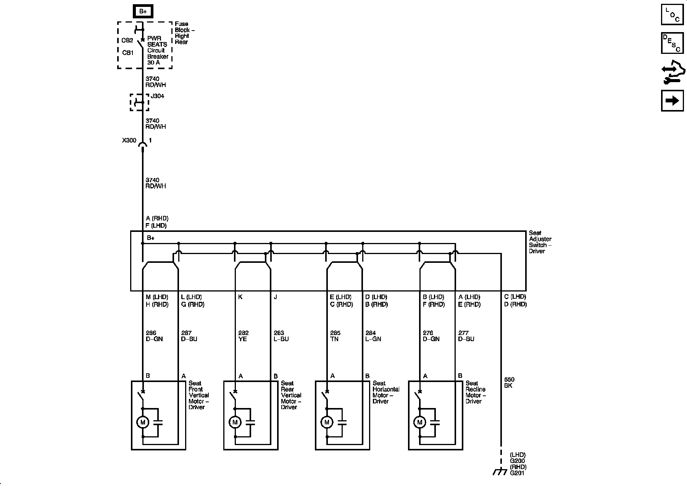
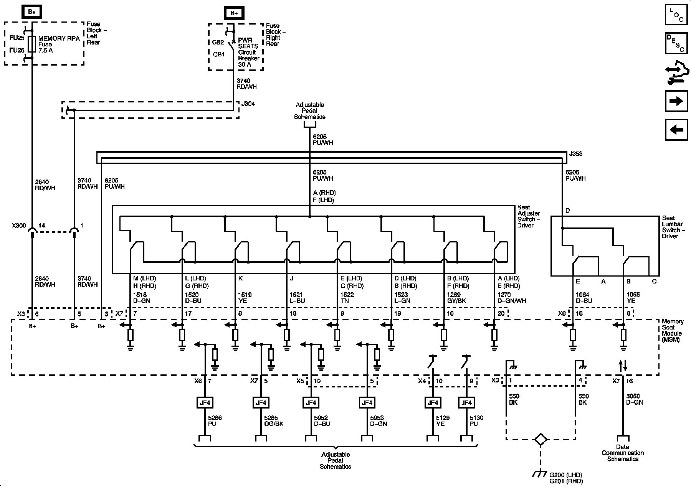
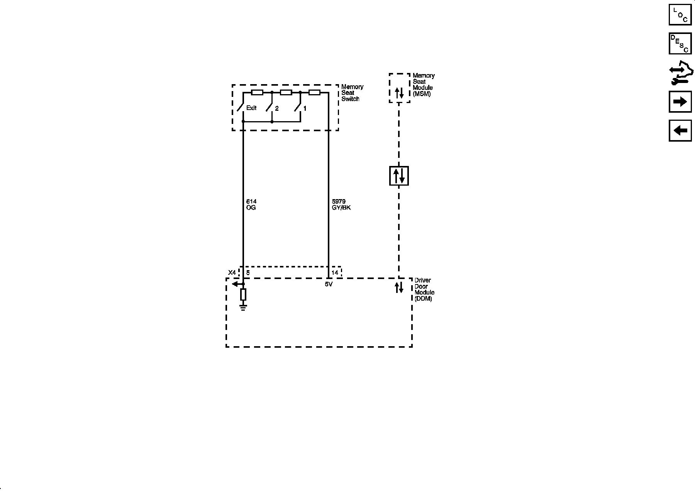
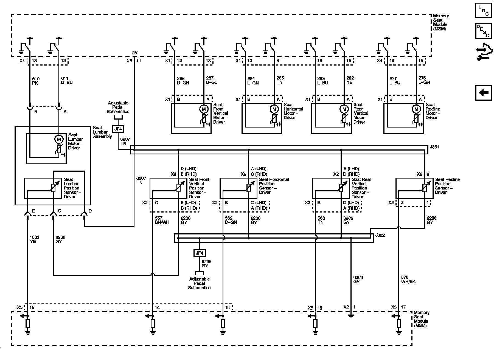

Operation CHARM
: Car repair manuals for everyone.
Home
>>
Cadillac
>>
2008
>>
SRX AWD V8-4.6L
>>
Repair and Diagnosis
>>
Diagrams
>>
Electrical Diagrams
>>
Seats
>>
System Diagram
>>
Driver Seat Schematics
Driver Seat Schematics
Driver Seat Schematics
Power Seat -A45

Memory Seat Module Power, Ground, and Seat Adjuster Switches A45

Memory Seat Controls A45

Memory Seat Position Sensors and Motors (A45)
